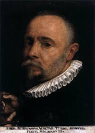
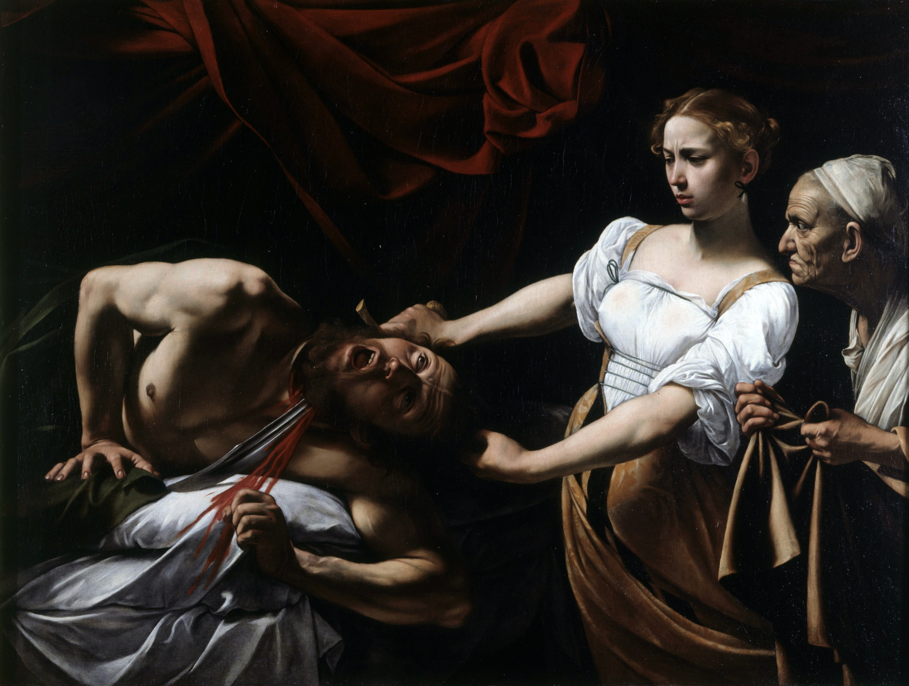

«Dépouillant la couleur de tout artifice et de toute vanité, il rendit aux teintes leur vigeur, ramenant ainsi les peintres à l'imitation de la nature.»
Michelangelo naît le 29 septembre 1571, à Milan, dans la paroisse de Santa Maria de la Passerella où résident alors ses parents Fermo Merisia et Lucia Aratori qui, tous deux originaires de Caravaggio, une petite ville de la région de Bergame alors sous domination espagnole. Enfant terrible du baroque, peintre de génie au tempérament impétueux, Michelangelo Merisi da Caravaggio, dit Caravage (1571–1610), est à l’origine d’une véritable révolution picturale. Son naturalisme anticonformiste et sa maîtrise du ténébrisme lui ont valu autant d’admirateurs que de critiques. Caravage a travaillé pour l’Église principale commanditaire à cette époque et offert une interprétation nouvelle des Saintes Écritures
Le jeune Caravage se forme dans l’atelier du peintre maniériste Simone Peterzano, puis il part à Rome. Élève auprès du Cavalier d’Arpin, peintre et décorateur maniériste, il exécute des natures mortes. Admirateur de Raphaël, Caravage se met en quête d’un retour radical au réalisme. Dès ses débuts, l’artiste attache autant d’importance à des sujets profanes que religieux, qu’il traite d’une manière similaire : avec crudité, mais aussi une grande théâtralité. De cette première période date son autoportrait en Jeune Bacchus malade (1591), l’une de ses plus célèbres toiles. En 1599, l’église Saint-Louis-des-Français (Rome) le sollicite pour une grande commande. À cette époque, le peintre est proche de la Congrégation des Oratoriens, fondée par saint Philippe Néri dans le champ de la Contre-Réforme. Les membres de celle-ci souhaitent renouer avec l’esprit de dévotion des premiers chrétiens, dépouillé de tout luxe ostentatoire. Caravage fait sensation en proposant un style novateur dans le traitement des thèmes religieux : l’artiste humanise le divin, représente les saints avec réalisme et joue sur la dramatisation du clair-obscur. Entre 1601 et 1606, il exécute la Mort de la Vierge pour l’autel d’une chapelle de l’église Sainte-Marie du Trastevere (Rome), dont le réalisme, à l’opposé de l’iconographie conventionnelle qui soulignait la sacralité de la Vierge, suscite un scandale – le tableau sera d’ailleurs remplacé par une œuvre de Carlo Saraceni. Pour autant, le peintre devient célèbre et bénéficie de la protection de nombreux mécènes. Mais le jeune artiste semble avoir du mal à gérer son succès. Si Caravage est peintre d’église, il n’en mène pas moins une vie de débauche dans les bas-fonds de Rome. Imprévisible, sanguin, il joue aussi bien du pinceau que des poings et de l’épée, ce qui lui vaudra d’être emprisonné à plusieurs reprises. En 1606, il tue un jeune homme lors d’une rixe, ce qui le contraint à s’exiler à Naples, où il continue de peindre.
| Tableaux références | Liens |
|---|---|
| Judith et Holopherne | Lien | Narcisse | Lien |
| Les Tricheurs | Lien | Saint Jérôme écrivant | Lien |
| David avec la tête de Goliath | Lien |

Écouter en observant le tableau